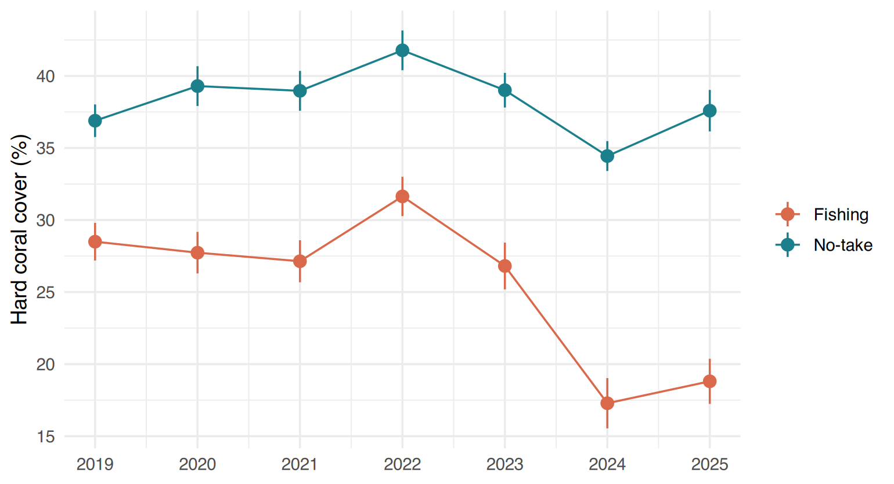

.Rmd file;echo, include, message,
fig.cap…);knitr::kable(),
flextable) and figures with captions, and
cross-reference them;.Rmd ;echo, include, message,
fig.cap…) ;knitr::kable(), flextable) et des
figures avec légende, et y faire
référence ;Data of this session (simulated). The coral reef
monitoring of the three MPAs, 2019–2025
(reef_monitoring.csv + reef_sites.csv,
described in Session A0): 18 sites, three 20 m Point Intercept Transects
per site and year; % hard coral, % macroalgae and % of colonies
bleached. The MPA managers want the same annual report every
year: this is exactly what R Markdown is for.
Données de cette séance (simulées). Le suivi des
récifs des trois AMP, 2019–2025 (reef_monitoring.csv +
reef_sites.csv, décrits à la séance A0) : 18 sites, trois
Point Intercept Transects de 20 m par site et par an ; % de corail dur,
% de macroalgues et % de colonies blanchies. Les gestionnaires des AMP
veulent le même rapport annuel chaque année : c’est
exactement à cela que sert R Markdown.
The usual way — analyse in R, copy numbers and paste graphs into Word — has two problems: errors (a number not updated, a graph from an old version) and time (everything is redone when the data change). In R Markdown the report is the analysis: when the 2026 data arrive, you click Knit and every number, table and figure is recomputed. This whole course website is written in R Markdown.
La méthode habituelle — analyser dans R, copier les chiffres et coller les graphiques dans Word — a deux problèmes : les erreurs (un chiffre non mis à jour, un graphique d’une ancienne version) et le temps (tout est à refaire quand les données changent). Avec R Markdown, le rapport est l’analyse : quand les données 2026 arrivent, vous cliquez sur Knit et chaque chiffre, tableau et figure est recalculé. Tout ce site de cours est écrit en R Markdown.
Three ingredients: the YAML header between
--- (title, author, output format), text
written in Markdown, and chunks of R code between
```{r} and ```. Here is the template of this
session (download it above and put it in the reports/
folder of your project):
Trois ingrédients : l’en-tête YAML entre
--- (titre, auteur, format de sortie), le
texte écrit en Markdown, et des chunks
de code R entre ```{r} et ```. Voici le modèle
de cette séance (téléchargez-le ci-dessus et placez-le dans le dossier
reports/ de votre projet) :
---
title: "Coral reef monitoring — results 2019–2025"
author: "Your name"
date: "`r format(Sys.Date(), '%d %B %Y')`"
output:
bookdown::html_document2:
toc: true
toc_float: true
number_sections: true
code_folding: hide
bookdown::word_document2: default
---
```{r setup, include=FALSE}
# Global options: code hidden, no messages or warnings in the report
knitr::opts_chunk$set(echo = FALSE, message = FALSE, warning = FALSE,
fig.width = 7, fig.height = 4, dpi = 150)
library(dplyr)
library(ggplot2)
library(here) # here() = paths from the project root, wherever this file is
reef <- read.csv(here("data", "raw", "reef_monitoring.csv"))
sites <- read.csv(here("data", "raw", "reef_sites.csv"))
reef <- left_join(reef, sites, by = "site_id")
# Numbers used in the text are computed ONCE, here
n_transects <- nrow(reef)
last_year <- max(reef$year)
cover_last <- reef %>% filter(year == last_year) %>%
group_by(zone) %>% summarise(mean = mean(hard_coral), .groups = "drop")
nt_last <- round(cover_last$mean[cover_last$zone == "No-take"], 1)
fi_last <- round(cover_last$mean[cover_last$zone == "Fishing"], 1)
```
# Summary
From 2019 to `r last_year`, the monitoring team surveyed **`r n_transects` transects**
in three MPAs. In `r last_year`, mean hard coral cover was **`r nt_last` %** in the
No-take zones and **`r fi_last` %** in the Fishing zones.When you click Knit, knitr runs the
chunks and writes their results into a Markdown file, then
pandoc converts it to HTML, Word or PDF.
Quand vous cliquez sur Knit, knitr
exécute les chunks et écrit leurs résultats dans un fichier Markdown,
puis pandoc le convertit en HTML, Word ou PDF.
Knit runs in a new, empty R session. Objects in your Environment pane do not exist for the report: everything must be created inside the .Rmd (import included). This is a feature: it guarantees that the report is reproducible.
Knit s’exécute dans une nouvelle session R vide. Les objets de votre panneau Environment n’existent pas pour le rapport : tout doit être créé dans le .Rmd (import compris). C’est voulu : cela garantit que le rapport est reproductible.
YAML is a list of key: value pairs. Indentation
matters: a key indented under another one (two spaces, never a
tab) belongs to it. Here toc: true belongs to
bookdown::html_document2, which belongs to
output.
| Key | What it does | Value it expects |
|---|---|---|
title, author |
text printed at the top of the report | text in quotes |
date |
date printed under the title;
"`r format(Sys.Date(), '%d %B %Y')`" writes
today’s date at each knit |
text, or inline R code in quotes |
output |
the output format(s); each one is a function name
(html_document, word_document,
pdf_document, or bookdown::…2 versions that
number figures) |
a format name, followed by its options indented below, or
default (= no option) |
toc |
adds a table of
contents built from the # headings |
true / false |
toc_float |
HTML only: the table of contents stays visible on the left when you scroll | true / false |
toc_depth |
which heading levels go in the table of contents | a number, e.g. 2 (# and
##) |
number_sections |
numbers the headings (1, 1.1, 1.2…) | true / false |
code_folding |
HTML only: adds a Code button; hide = code
hidden until the reader clicks, show = shown but
foldable |
none, hide, show |
reference_docx |
Word only: a Word file whose styles (fonts, headings, margins) are copied | path to a .docx file |
self_contained |
HTML only: images and styles inside the single .html file (default
true) |
true / false |
true and false are written in lower
case in YAML (not TRUE as in R). Options are
not shared between formats: toc_float and
code_folding exist for html_document but not
for word_document — check the help of the format,
e.g. ?rmarkdown::html_document, for the list of its
options.
Le YAML est une liste de paires clé: valeur.
L’indentation compte : une clé décalée sous une autre
(deux espaces, jamais de tabulation) lui appartient. Ici
toc: true appartient à
bookdown::html_document2, qui appartient à
output.
| Clé | Ce qu’elle fait | Valeur attendue |
|---|---|---|
title, author |
texte affiché en haut du rapport | texte entre guillemets |
date |
date affichée sous le titre ;
"`r format(Sys.Date(), '%d %B %Y')`" écrit la date
du jour à chaque knit |
texte, ou code R en ligne entre guillemets |
output |
le ou les formats de sortie ; chacun est un nom de
fonction (html_document, word_document,
pdf_document, ou les versions bookdown::…2 qui
numérotent les figures) |
un nom de format, suivi de ses options décalées en dessous, ou
default (= aucune option) |
toc |
ajoute une table des matières (table of
contents) construite à partir des titres # |
true / false |
toc_float |
HTML seulement : la table des matières reste visible à gauche quand on fait défiler | true / false |
toc_depth |
quels niveaux de titres vont dans la table des matières | un nombre, ex. 2 (# et
##) |
number_sections |
numérote les titres (1, 1.1, 1.2…) | true / false |
code_folding |
HTML seulement : ajoute un bouton Code ; hide
= code caché jusqu’au clic du lecteur, show = affiché mais
repliable |
none, hide, show |
reference_docx |
Word seulement : un fichier Word dont les styles (polices, titres, marges) sont copiés | chemin vers un .docx |
self_contained |
HTML seulement : images et styles dans l’unique fichier .html (par
défaut true) |
true / false |
true et false s’écrivent en
minuscules en YAML (pas TRUE comme dans
R). Les options ne sont pas partagées entre formats :
toc_float et code_folding existent pour
html_document mais pas pour word_document —
consultez l’aide du format, ex. ?rmarkdown::html_document,
pour la liste de ses options.
| You write | You get |
|---|---|
# Title, ## Subtitle |
headings of level 1, 2 |
**bold**, *italic* |
bold, italic |
- item (blank line before the list!) |
a bulleted list |
1. item |
a numbered list |
[NOAA](https://www.noaa.gov) |
a link |
 |
an image |
H~2~O, m^2^ |
subscript, superscript: H2O, m2 |
$\bar{x} \pm SE$ |
an equation (LaTeX syntax) |
Text^[A footnote.] |
a footnote |
| Vous écrivez | Vous obtenez |
|---|---|
# Titre, ## Sous-titre |
titres de niveau 1, 2 |
**gras**, *italique* |
gras, italique |
- élément (ligne vide avant la liste !) |
une liste à puces |
1. élément |
une liste numérotée |
[NOAA](https://www.noaa.gov) |
un lien |
 |
une image |
H~2~O, m^2^ |
indice, exposant : H2O, m2 |
$\bar{x} \pm ES$ |
une équation (syntaxe LaTeX) |
Texte^[Une note.] |
une note de bas de page |
Options go inside the braces:
```{r label, echo = FALSE, fig.cap = "..."}. The
label (no spaces, unique) names the chunk, its figure
files and its cross-reference. Set the options of the whole report once,
in a setup chunk with
knitr::opts_chunk$set().
| Option | Effect | Typical use |
|---|---|---|
echo = FALSE |
hides the code, shows the results | reports for managers |
include = FALSE |
runs the code, shows nothing | setup, imports, calculations |
eval = FALSE |
shows the code, does not run it | examples |
message = FALSE, warning = FALSE |
hides messages / warnings | library() calls |
results = "hide" |
hides printed results only | |
fig.cap = "..." |
figure caption (needed for numbering) | every figure |
fig.width, fig.height (inches),
out.width = "80%", dpi |
size and resolution | |
cache = TRUE |
keeps results between knits | long calculations (use carefully) |
Les options se placent dans les accolades :
```{r label, echo = FALSE, fig.cap = "..."}. Le
label (sans espaces, unique) nomme le chunk, ses
fichiers de figures et sa référence croisée. Fixez les options de tout
le rapport une seule fois, dans un chunk setup avec
knitr::opts_chunk$set().
| Option | Effet | Usage typique |
|---|---|---|
echo = FALSE |
cache le code, montre les résultats | rapports pour les gestionnaires |
include = FALSE |
exécute le code, ne montre rien | setup, imports, calculs |
eval = FALSE |
montre le code, ne l’exécute pas | exemples |
message = FALSE, warning = FALSE |
cache messages / avertissements | appels library() |
results = "hide" |
cache seulement les résultats affichés | |
fig.cap = "..." |
légende de figure (nécessaire à la numérotation) | chaque figure |
fig.width, fig.height (pouces),
out.width = "80%", dpi |
taille et résolution | |
cache = TRUE |
garde les résultats entre deux knits | calculs longs (avec prudence) |
Functions and arguments used here
| Function / argument | What it does | Value it expects |
|---|---|---|
knitr::opts_chunk$set(...) |
sets the default options of all the chunks that
follow; a chunk can still override them in its own
{r ...} |
options separated by commas, as in the table |
out.width |
display width of the figure in the document (does not change how it is drawn) | "80%" or "12cm" |
dpi |
resolution of the figure (same as res in
png()) |
a number, e.g. 150 or 300 |
Fonctions et arguments utilisés ici
| Fonction / argument | Ce qu’il fait | Valeur attendue |
|---|---|---|
knitr::opts_chunk$set(...) |
fixe les options par défaut de tous les chunks qui
suivent ; un chunk peut encore les changer dans son propre
{r ...} |
options séparées par des virgules, comme dans le tableau |
out.width |
largeur d’affichage de la figure dans le document (ne change pas son dessin) | "80%" ou "12cm" |
dpi |
résolution de la figure (comme res dans
png()) |
un nombre, ex. 150 ou 300 |
Chunk options use dots (fig.width,
out.width) — Quarto (Session A8) writes the same options
with hyphens (fig-width) in
#| lines.
Les options de chunk utilisent des points
(fig.width, out.width) — Quarto (séance A8)
écrit les mêmes options avec des tirets
(fig-width) dans les lignes #|.
Write `r round(mean(x), 1)` in a sentence and the value
replaces it when you knit. Compute the numbers in a chunk (with
include = FALSE), then write only the object
name in the text: sentences stay readable.
Écrivez `r round(mean(x), 1)` dans une phrase et la
valeur la remplace au moment du knit. Calculez les nombres dans un chunk
(avec include = FALSE), puis n’écrivez que le nom
de l’objet dans le texte : les phrases restent lisibles.
last_year <- max(reef$year)
cover <- reef %>% filter(year == last_year) %>% group_by(zone) %>%
summarise(m = mean(hard_coral), .groups = "drop")
nt <- round(cover$m[cover$zone == "No-take"], 1)
fi <- round(cover$m[cover$zone == "Fishing"], 1)Functions and arguments used here
| Function / argument | What it does | Value it expects |
|---|---|---|
`r x` |
inline R code: replaced by the value of x when
knitting |
an object name or a short calculation |
max(), filter(), group_by(),
summarise() |
reminders (Beginner Sessions 2 and 8) |
Fonctions et arguments utilisés ici
| Fonction / argument | Ce qu’il fait | Valeur attendue |
|---|---|---|
`r x` |
code R en ligne : remplacé par la valeur de x au moment
du knit |
un nom d’objet ou un calcul court |
max(), filter(), group_by(),
summarise() |
rappels (séances 2 et 8 du niveau débutant) |
The source line…
In `r last_year`, mean hard coral cover was `r nt` % in No-take zones and `r fi` % in Fishing zones.…becomes: In 2025, mean hard coral cover was 37.6 % in No-take zones and 18.8 % in Fishing zones.
La ligne source…
En `r last_year`, le corail dur moyen était de `r nt` % dans les zones No-take et de `r fi` % dans les zones Fishing.…devient : En 2025, le corail dur moyen était de 37,6 % dans les zones No-take et de 18,8 % dans les zones Fishing.
format(x, big.mark = " ") writes 12 500 instead of
12500; format(x, decimal.mark = ",") gives a French decimal
comma; scales::percent(0.253) gives “25%”. For p-values:
format.pval(p, digits = 2, eps = 0.001) writes
“<0.001”.
format(x, big.mark = " ") écrit 12 500 au lieu de 12500
; format(x, decimal.mark = ",") donne une virgule décimale
; scales::percent(0.253) donne « 25% ». Pour les p-values :
format.pval(p, digits = 2, eps = 0.001) écrit « <0.001
».
Never print a raw data frame in a report: use
knitr::kable() (HTML, Word, PDF) — or
flextable when you need a fully formatted Word table
(merged cells, colours, fonts).
N’affichez jamais un data frame brut dans un rapport : utilisez
knitr::kable() (HTML, Word, PDF) — ou
flextable quand il vous faut un tableau Word entièrement
mis en forme (cellules fusionnées, couleurs, polices).
tab <- reef %>% filter(year == last_year) %>%
group_by(mpa, zone) %>%
summarise(transects = n(), mean = mean(hard_coral), sd = sd(hard_coral), .groups = "drop")
knitr::kable(tab, digits = 1,
col.names = c("MPA", "Zone", "Transects", "Mean (%)", "SD"),
caption = paste("Hard coral cover per MPA and zone,", last_year))| MPA | Zone | Transects | Mean (%) | SD |
|---|---|---|---|---|
| Ankaramena | Fishing | 9 | 26.9 | 5.5 |
| Ankaramena | No-take | 9 | 46.0 | 4.4 |
| Nosy Fasika | Fishing | 9 | 18.6 | 3.5 |
| Nosy Fasika | No-take | 9 | 35.0 | 4.0 |
| Tanjona | Fishing | 9 | 10.8 | 5.2 |
| Tanjona | No-take | 9 | 31.8 | 4.6 |
Functions and arguments used here
| Function / argument | What it does | Value it expects |
|---|---|---|
knitr::kable(x, digits, col.names, caption) |
turns a data frame into a formatted table in HTML, Word or PDF | |
digits |
number of decimals of the numeric columns | a whole number (or one per column) |
col.names |
the titles of the columns shown in the report (the data keep their names) | a text vector, one per column |
caption |
the table title; with a bookdown format it gets a number and can be referred to | text |
align |
alignment of each column | "l", "c", "r",
e.g. "llrrr" |
Fonctions et arguments utilisés ici
| Fonction / argument | Ce qu’il fait | Valeur attendue |
|---|---|---|
knitr::kable(x, digits, col.names, caption) |
transforme un data frame en tableau mis en forme en HTML, Word ou PDF | |
digits |
nombre de décimales des colonnes numériques | un nombre entier (ou un par colonne) |
col.names |
les titres des colonnes affichés dans le rapport (les données gardent leurs noms) | un vecteur de texte, un par colonne |
caption |
le titre du tableau ; avec un format bookdown il est numéroté et peut être cité | texte |
align |
alignement de chaque colonne | "l", "c", "r", ex.
"llrrr" |
library(flextable)
flextable(tab) |>
colformat_double(digits = 1) |>
set_header_labels(mpa = "MPA", zone = "Zone", transects = "Transects", mean = "Mean (%)", sd = "SD") |>
merge_v(j = "mpa") |> # merge the repeated MPA names
autofit()Functions and arguments used here
| Function / argument | What it does | Value it expects |
|---|---|---|
flextable(data) |
creates a table object that can be formatted step by step | a data frame |
colformat_double(x, digits) |
number of decimals of the columns with decimals | a whole number |
set_header_labels(x, ...) |
header texts: column = "Title" |
|
merge_v(x, j) |
merges vertically the identical neighbouring cells
of column(s) j |
column name(s) in quotes |
autofit(x) |
adjusts the column widths to their content |
Fonctions et arguments utilisés ici
| Fonction / argument | Ce qu’il fait | Valeur attendue |
|---|---|---|
flextable(data) |
crée un objet tableau que l’on peut mettre en forme étape par étape | un data frame |
colformat_double(x, digits) |
nombre de décimales des colonnes à décimales | un nombre entier |
set_header_labels(x, ...) |
textes d’en-tête : colonne = "Titre" |
|
merge_v(x, j) |
fusionne verticalement les cellules voisines
identiques de la ou des colonnes j |
nom(s) de colonne entre guillemets |
autofit(x) |
ajuste la largeur des colonnes à leur contenu |
kable() names the column titles col.names;
flextable does it with a separate function,
set_header_labels(), where each title is given by
column name. Same goal, different tools.
kable() appelle les titres de colonnes
col.names ; flextable le fait avec une fonction séparée,
set_header_labels(), où chaque titre est donné par
nom de colonne. Même but, outils différents.
Give every figure a fig.cap. To number
figures and tables and refer to them in the text (“see Figure 2”), use
the bookdown formats:
bookdown::html_document2,
bookdown::word_document2 or
bookdown::pdf_document2. Then write
\@ref(fig:label) for a figure (label of its chunk) and
\@ref(tab:label) for a table made by kable()
with a caption. If the number of a figure changes, every reference
follows.
Donnez à chaque figure un fig.cap. Pour
numéroter figures et tableaux et y renvoyer dans le
texte (« voir Figure 2 »), utilisez les formats
bookdown : bookdown::html_document2,
bookdown::word_document2 ou
bookdown::pdf_document2. Écrivez alors
\@ref(fig:label) pour une figure (label de son chunk) et
\@ref(tab:label) pour un tableau fait par
kable() avec une légende. Si le numéro d’une figure change,
chaque renvoi suit.
se <- function(x) sd(x) / sqrt(length(x))
trend <- reef %>% group_by(year, zone) %>%
summarise(m = mean(hard_coral), se = se(hard_coral), .groups = "drop")
ggplot(trend, aes(year, m, colour = zone)) +
geom_line() + geom_pointrange(aes(ymin = m - se, ymax = m + se)) +
scale_colour_manual(values = c("No-take" = "#1b7f8c", "Fishing" = "#d9694a")) +
scale_x_continuous(breaks = 2019:2025) +
labs(x = NULL, y = "Hard coral cover (%)", colour = NULL) + theme_minimal(base_size = 12)
Mean hard coral cover (± SE) per year and zone, three MPAs together.
Functions and arguments used here
| Function / argument | What it does | Value it expects |
|---|---|---|
{r trend, fig.cap = "..."} |
the chunk label trend becomes the figure name:
\@ref(fig:trend) in the text |
|
geom_line(), geom_pointrange(),
scale_x_continuous(breaks) |
reminders (Intermediate I7–I8) |
Fonctions et arguments utilisés ici
| Fonction / argument | Ce qu’il fait | Valeur attendue |
|---|---|---|
{r trend, fig.cap = "..."} |
le label du chunk trend devient le nom de la figure :
\@ref(fig:trend) dans le texte |
|
geom_line(), geom_pointrange(),
scale_x_continuous(breaks) |
rappels (intermédiaire I7–I8) |
Try it. Look at the figure: Fishing zones seem to
jump in 2022. Is it real? Count the transects per year
and zone (count(reef, year, zone)). Which MPA is missing in
2022, and why does that change the mean? Write one sentence for the
report that warns the reader.
À vous. Regardez la figure : les zones Fishing
semblent sauter en 2022. Est-ce réel ? Comptez les
transects par année et par zone (count(reef, year, zone)).
Quelle AMP manque en 2022, et pourquoi cela change-t-il la moyenne ?
Écrivez une phrase du rapport qui prévienne le lecteur.
| Format | YAML | Notes |
|---|---|---|
| HTML | html_document (or
bookdown::html_document2) with toc: true,
toc_float: true, number_sections: true,
code_folding: hide |
best on screen; one self-contained file to e-mail |
| Word | word_document with
reference_docx: my_styles.docx |
your institution’s fonts and styles: make a Word file with the styles you want, and point to it |
pdf_document |
needs LaTeX:
install.packages("tinytex"); tinytex::install_tinytex()
(once). Quarto can also use Typst, lighter (Session
A9) |
Several formats in the header? Knit uses the first one; the small arrow next to Knit lets you choose. From the Console:
| Format | YAML | Remarques |
|---|---|---|
| HTML | html_document (ou
bookdown::html_document2) avec toc: true,
toc_float: true, number_sections: true,
code_folding: hide |
idéal à l’écran ; un seul fichier autonome à envoyer |
| Word | word_document avec
reference_docx: mes_styles.docx |
les polices et styles de votre institution : faites un fichier Word avec les styles voulus, et indiquez-le |
pdf_document |
demande LaTeX :
install.packages("tinytex"); tinytex::install_tinytex()
(une fois). Quarto peut aussi utiliser Typst, plus
léger (séance A9) |
Plusieurs formats dans l’en-tête ? Knit utilise le premier ; la petite flèche à côté de Knit permet de choisir. Depuis la Console :
rmarkdown::render(here::here("reports", "reef_report.Rmd"),
output_format = "bookdown::word_document2",
output_dir = here::here("outputs"))Argument of render() |
What it does |
|---|---|
input (first argument) |
the .Rmd file to produce |
output_format |
which format of the YAML to use, as text
("bookdown::word_document2"); "all" = every
format of the header. Without it: the first one |
output_dir |
folder where the result is written (created if needed) |
Long reports: split them into several files and
assemble them with child documents:
```{r, child = "methods.Rmd"} ```.
Argument de render() |
Ce qu’il fait |
|---|---|
input (premier argument) |
le fichier .Rmd à produire |
output_format |
quel format du YAML utiliser, sous forme de texte
("bookdown::word_document2") ; "all" = tous
les formats de l’en-tête. Sans lui : le premier |
output_dir |
dossier où le résultat est écrit (créé si besoin) |
Rapports longs : découpez-les en plusieurs fichiers
et assemblez-les avec des documents enfants :
```{r, child = "methods.Rmd"} ```.
reef_report.Rmd in reports/ of your
reef-monitoring project (with the two CSV files in
data/raw/) and knit it in HTML, then in
Word.\@ref(fig:...).reef_report.Rmd dans reports/ de
votre projet reef-monitoring (avec les deux fichiers CSV
dans data/raw/) et faites un knit en HTML,
puis en Word.\@ref(fig:...).If the knit fails with cannot open file ‘data/raw/…’, the
report looks for the data from the reports/ folder: check
that the template uses here() and that your project has a
.Rproj file at its root. If \@ref() stays as
text, the output format is not a bookdown::…2 format or the
chunk has no fig.cap.
Si le knit échoue avec cannot open file ‘data/raw/…’, le
rapport cherche les données depuis le dossier reports/ :
vérifiez que le modèle utilise here() et que votre projet a
un fichier .Rproj à sa racine. Si \@ref()
reste en texte, le format de sortie n’est pas un format
bookdown::…2 ou le chunk n’a pas de
fig.cap.
# 2-4: the numbers printed by the template (n_transects, b24, table of 2025)
# 5:
count(reef, year, zone) %>% filter(year == 2022) # Tanjona missing -> fewer Fishing transects
# 6: in a chunk with include = FALSE
tj <- reef %>% filter(year == 2025, mpa == "Tanjona", zone == "No-take")
tj_nt <- round(mean(tj$hard_coral), 1)
# ... and in the text: In 2025, the No-take zone of Tanjona had `r tj_nt` % hard coral.
# 7:Figure \@ref(fig:algae) shows the mean macroalgae cover per year.
```{r algae, fig.cap = "Mean macroalgae cover per year and zone."}
reef %>% group_by(year, zone) %>% summarise(m = mean(macroalgae), .groups = "drop") %>%
ggplot(aes(year, m, colour = zone)) + geom_line() + geom_point() +
labs(x = NULL, y = "Macroalgae cover (%)") + theme_minimal()
```